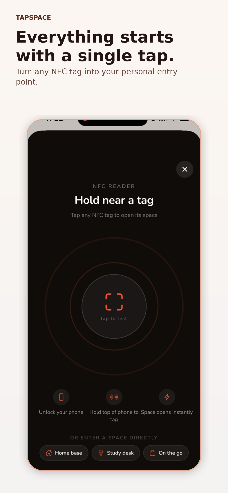
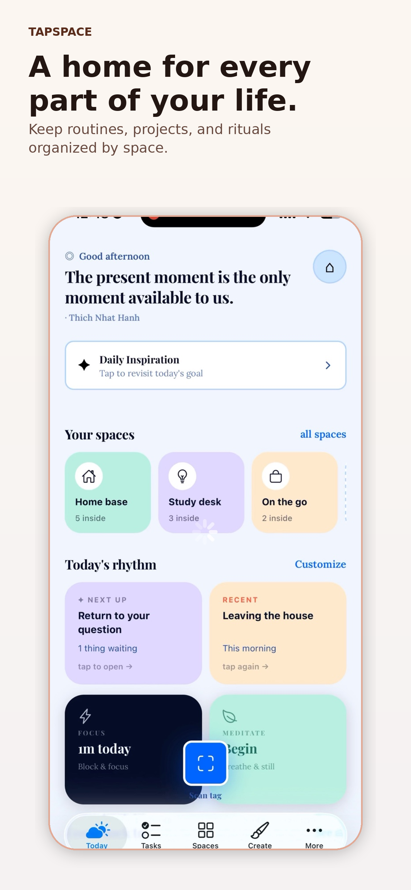
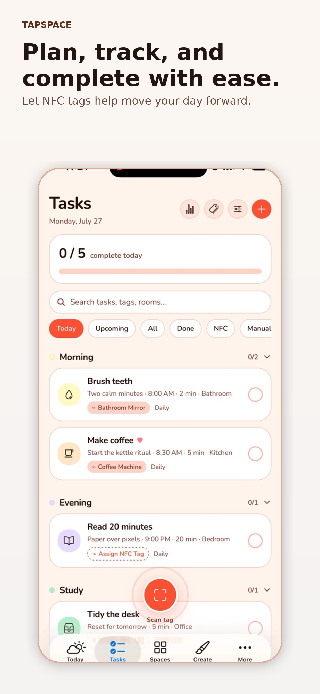
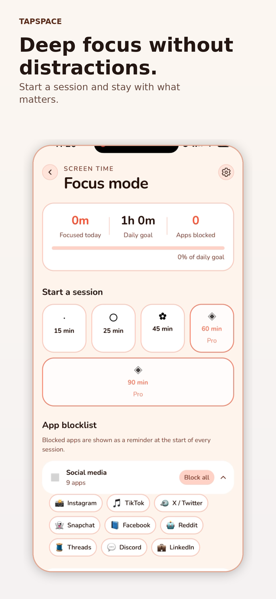

⌁
Tap to begin
Turn NFC tags into fast, intentional entry points instead of another notification.
Tapspace turns everyday NFC tags into personalized entry points for your routines, tasks, focus sessions, and the places that matter to you.
Designed for iPhone. NFC tags sold separately.


Place an NFC tag where an action belongs. Tap it when you are there. Tapspace opens the exact space, routine, or workflow you assigned.
Turn NFC tags into fast, intentional entry points instead of another notification.
Create dedicated places for home, study, travel, projects, and personal rituals.
Connect actions to the rooms and objects where they actually happen.
Start structured focus sessions and keep important work in view.
Build guided experiences from templates or design something entirely yours.
Keep useful actions close to their physical context instead of buried in folders.
Group tasks by time, tag, room, or routine, then use NFC to complete them in context.

Choose a session, define what matters, and keep your attention anchored to the work.

Tapspace is built to minimize unnecessary data collection and make its data practices easy to understand.
View privacy policyTapspace is being prepared for release on the Apple App Store.
Contact support